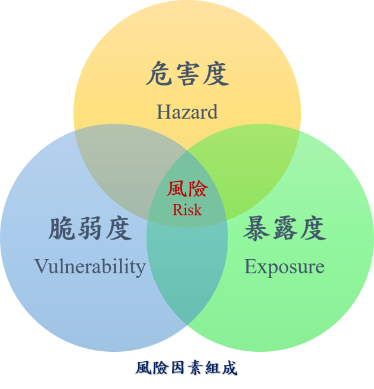
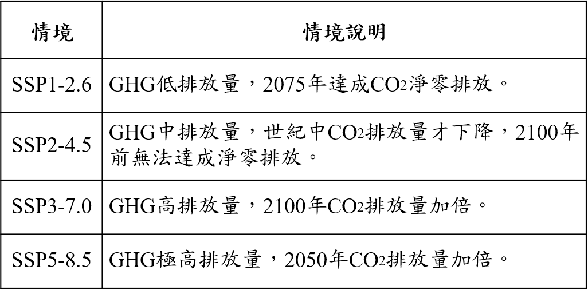
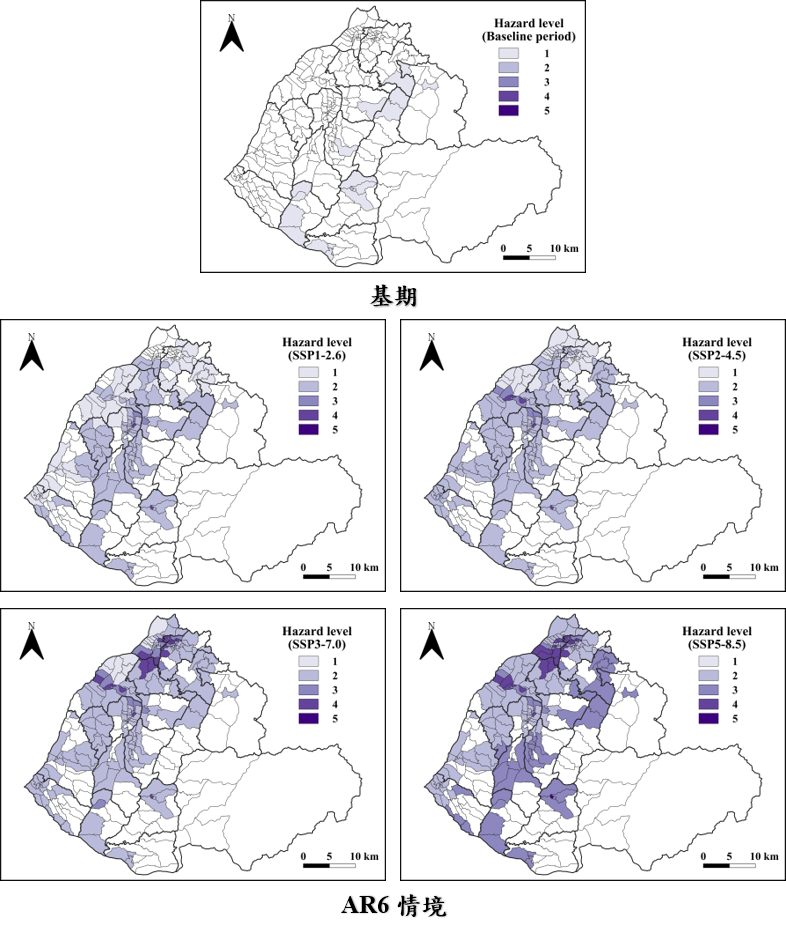
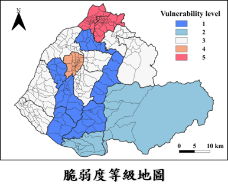
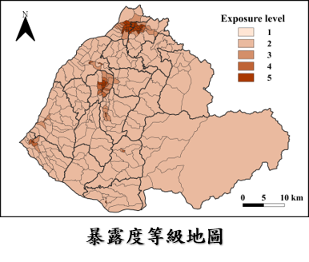
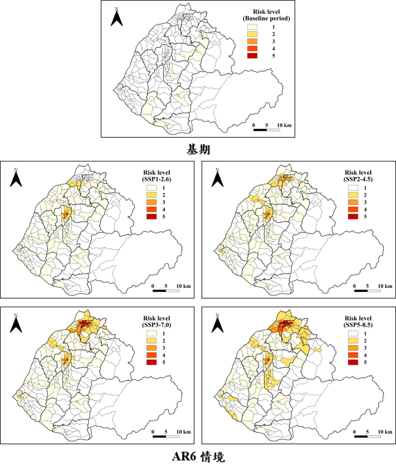

■ 危害度：災害造成的威脅程度
■ 脆弱度：面對災害時的應對與調適能力
■ 暴露度：受災害影響的對象或設施

■ 聯合國政府間氣候變遷專門委員會(IPCC)在第六次的評估報告(AR6)中提出的最新氣候變遷情境

■ 危害度 = 降雨機率 × 淹水深度
■ 降雨機率：使用AR6統計降尺度日降雨量資料，計算各村里發生日累積雨量650毫米的機率
■ 淹水深度：使用第三代淹水潛勢圖，計算各村里的淹水程度
■ 危害度等級高表示災害造成的威脅程度相對較高
■ 隨著溫室氣體排放量增加，各村里的危害度等級亦隨之上升
■ 影響範圍與程度主要取決於淹水深度，危害度等級高的村里主要集中在竹南鎮、頭份市及後龍鎮

■ 使用減災動資料網站，選擇適用於淹水災害的評估指標細項，計算各村里的社會脆弱度
■ 脆弱度等級高表示面對災害時的應對與調適能力相對較低
■ 脆弱度等級5的鄉鎮市分別是竹南鎮與頭份市

■ 使用苗栗縣戶政服務網的人口數資料，計算各村里的人口密度
■ 暴露度等級高表示受災害影響的人口相對較高
■ 暴露度等級高的村里主要集中在頭份市、竹南鎮及苗栗市較高度都會化的區域

■ 風險等級與影響範圍隨著溫室氣體排放量增加而上升，表示兩者為正相關關係
■ 在SSP5-8.5情境下，水災風險等級高的村里主要集中在頭份市與竹南鎮
